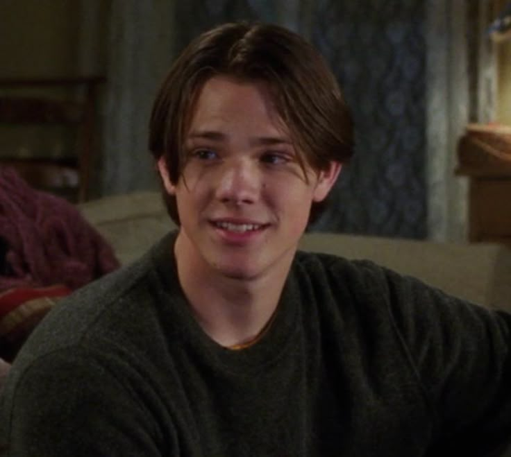

Aunque richard la mayoria del tiempo fue muy buen esposo,
nunca estaba presente y todo el tema de pennylin fue algo que yo en lo personal jamas habria perdonado,
pero la pongo muy arriba porque no se quedaba callada, solo no salia de ahi.
Aunque no soporto nada de el, fue muy migajero al dejar que lorelai escondiera su relacion por miedo a sus papas,
aunque igual lo entiendo porque de su parte podria perder su trabajo, que era casi toda su vida.
Realmente esta chica merecia lo mejor del mundo, pero era migajera, literalmente dean le daba lo minimo de atencion
y mentia constantemente, aunque si es verdad que le termino un tiempo despues, estuvo mucho tiempo aferrada a su matrimonio.
Estuvo toda su vida esperando por lorelai, habria tomado cualquier oportunidad para estar con ella incluso si el no
fuera lo que ella queria, lo cual me parece bipolar porque ya todos sabemos que abandono a la mujer que amaba con una hija de el,
solo para anos despues quejarse de que le hicieronlo mismo.
Se aferro a su relacion con paris incluso cuando ella lo estaba enganando, aunque yo ame a paris, jamie era excelente
y le daba mas amor a ella de lo que creia merecer entonces solo lo alejo de su vida haciendole dano, no lo pongo mas arriba porque no
tuvo mucha relevancia o screentime.
Si es verdad que era irritante y fue muy raro que le empezara a gustar "mary" de la nada, literalmente hubiera
tomado cualquier muestra de amor que ella le diera, fue muy directa su manera de mostrar amor, y como ella no sentia nada por el
solo lo tomo como un juego y lo dejo ahi.
Si, y no estoy hablando de las ultimas temporadas. cuando rory se empezo a enamorar de jess el estaba en su peak de amor por ella, se quedaba ahi aferrandose hasta que finalmente habia un triangulo amoroso que no podria soportar. Pero realmente fue el novio de rory que mas la amo, estaba obsesionado con todo lo que tenga que ver con rory, y si, tenia sus red flags pero hubiera estado mejor hacerlo de una manera pacifica, la ruptura realmente marco un antes y despues en su vida.
